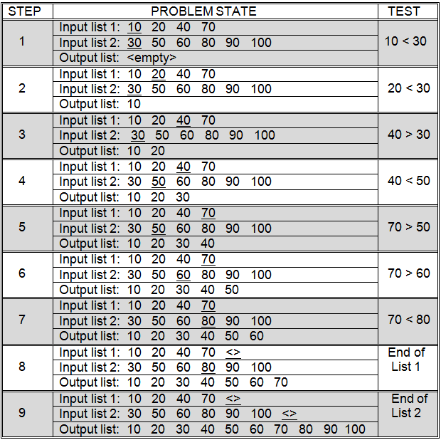
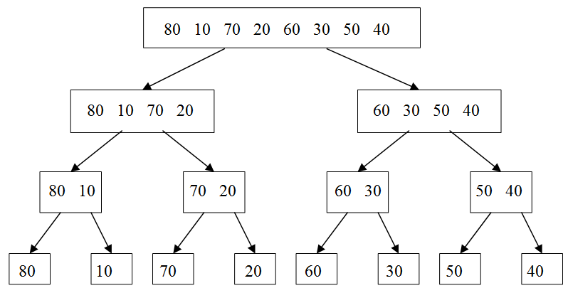
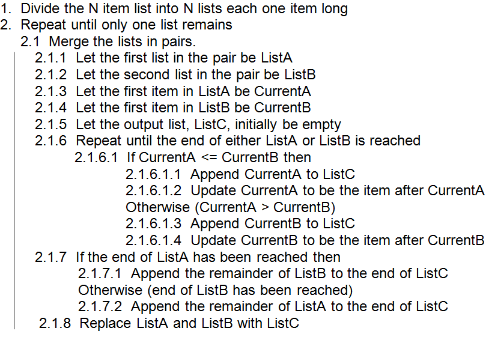
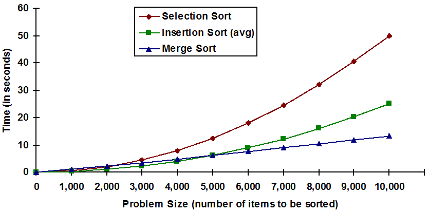

In the previous section, insertion sort was shown to generally run faster than selection sort. Are there sorts that run even faster than insertion sort? Definitely!
While insertion sort works well on relatively short lists (e.g., 50 to 100 items), it tends to become quite slow on longer lists. For example, assuming a machine capable of one million high-level comparison operations per second, insertion sort could arrange 10,000 student records in about 25 seconds, which might be acceptable if sorting were not performed very often. However, sorting 300 million social security numbers on the same machine would require over 700 years, on average, and over 14 centuries in the worst case. Clearly, no one can afford to wait that long for a list to be sorted. Thankfully, computer scientists have developed more efficient sorting techniques, such as merge sort and quick sort.
Merging two sorted lists
The main idea behind merge sort is that combining, or merging, two presorted lists into a third sorted list is a relatively quick and easy process. Essentially, the merge algorithm works its way through the two presorted lists from front to back. As it moves through these two lists it constructs a third “sorted list” that will hold all of the items in the two input lists combined into a single sorted list. Each of the two input lists will have a separate “current item”. The algorithm compares the two “current items” and appends the smallest onto the end of the “sorted list”. The input list from which this item came then has its “current item” advanced to the next item in that list. This process is repeated until the end of either input list is reached. At that point, the remaining items in the other input list are appended to the end of the “sorted list.” This process is illustrated in .
Merging two lists with a combined length of N items will take at most N - 1 comparison operations. Fewer comparisons are necessary when one of the lists is shorter than the other, or when the end of one list is reached before the end of the other.
You may be saying to yourself at this point “OK, I understand how the merging operation works, and I can see that it is efficient. But, how can knowledge concerning merging two sorted lists help solve the problem of sorting a single unsorted list?”
The answer lies in the way that merge sort approaches the sorting problem. Rather than viewing the input as a single list of N items, merge sort views it as N lists, each one item long. Since lists that contain a single item are already sorted, the algorithm simply needs to merge the N lists together to produce the final sorted result – a rather clever approach don’t you think?
Merge sort is an example of a general class of algorithms called divide-and-conquer algorithms. Divide-and-conquer algorithms work by taking a single complex problem and dividing it into a number of smaller instances of the same problem. This division process is repeated over and over until a large number of very simple problems are generated. These simple problems are then solved and the results combined to form the solution to the original complex problem.
Divide-and-conquer algorithms tend to consist of three identifiable parts: (1) a procedure for dividing a complex problem into two or more simpler problems, (2) a procedure for solving simple instances of the problem, and (3) a procedure for combining the results of subproblems so that they form the answer to a larger problem.
Dividing an eight item unsorted list into eight lists, each containing one item
Merging eight single item lists into one eight item sorted list
illustrates the process of dividing a single unsorted list of eight items into eight lists, each one item long. First, the eight item input list is divided into two unsorted lists of size four, then four lists of size two, and finally, eight lists of size one. In general this approach can be used to divide any list of size N into N lists of size one. The N item list is first divided into two lists of size N/2. This is done by computing the mid point of the original list and marking the first half as one list and the second half as another list. If the original list contains an odd number of items and therefore cannot be evenly divided, one of the lists is allowed to have one extra item. By repeating this divide step over and over, eventually a point will be reached where there are N total lists, each of size one.
The second step of a divide-and-conquer algorithm is to solve the simple problems. In the case of merge sort, the process of subdividing the input list terminates when lists of size one are reached. These lists are, by their very nature, sorted, so no work is required to order them.
The final step of every divide-and-conquer algorithm is to combine the results of the subproblems. This is where the actual work goes on in merge sort. The algorithm will consider each of the N single item lists in pairs. Pairs of single item lists will be merged to form a total of N/2 lists of two items each. In turn, these lists will be processed in pairs to form N/4 sorted lists, each four items in length. This merging of pairs will continue until a single sorted list is produced. The merge process, applied to the input list of , is illustrated in .
Merge sort
The merge sort algorithm is presented in . Since merging is not a “simple” operation, the above algorithm includes a description of the steps required to merge two lists together. Notice that the algorithm specifies that the lists must be merged in pairs. All pairs of length one lists should be merged, then all pairs of length two lists, then pairs of length four lists, etc. It is important that equal length lists should be merged whenever possible. Merging two length one lists to form a length two list and then merging that with a length one list to form a length three list, then merging that with another length one list should not be done. Instead, the two pairs of length one lists should be merged, then the resulting pair of length two lists should be merged. Merging pairs of lists in this order will ensure that each “pass” through the data reduces the number of lists in half, while doubling the length of those lists.
At this point you might be thinking that, surely, such a convoluted approach to sorting cannot possibly be more efficient than a more straightforward technique, such as insertion sort.
The opposite is actually true. In terms of the number of comparisons, merge sort is highly efficient. In order to understand why this is true, it is necessary to know two things: the number of comparisons required to merge all of the pairs of a particular size (i.e., the amount of work required to perform step 2.1 of the algorithm) and the number of times it will be necessary to go through the merge process (i.e., the number of times step 2 of the algorithm will be repeated).
During each pass through step 2.1 of the algorithm, all N input items must be processed. This can be seen in , which illustrates the merge sorting of eight items. At each level (corresponding to an iteration of step 2 of the algorithm), eight items are processed. We established earlier that merging is a linear operation. Merging N items takes at most N - 1 comparisons. Thus, the number of comparisons needed to perform step 2.1 will never exceed N.
The number of iterations of step 2 is given by log2N. This result follows from the fact that the number of lists to be merged is reduced by one half during each execution of step 2.1. This behavior can be seen on the eight item list of . For eight items, there are three levels at which merging must be performed (log28 = 3, since 23 = 8).
The total number of comparisons required by merge sort can be computed by multiplying the number of comparisons needed to merge all pairs of lists of a particular size, times the number of times this merge process must be performed. Hence,
Number of merge sort comparisons = Nlog2N
This formula, unlike the others we have developed in this chapter, is not exact. It is only an approximation. One reason for this is that we have not addressed cases in which the size of the list, N, is not a perfect power of two.
Using the formula, it is possible to estimate that a merge sort of 10,000 items will require about 13,300 comparisons.
The 13,300 comparisons needed by merge sort to process 10,000 items is quite an improvement over the 25 million or so comparisons required by insertion sort, in the average case, and the 50 million or so comparisons needed by selection sort.
Of course, as was the case with binary search verses sequential search, the overhead associated with a comparison in a merge sort tends to be greater than in simpler sorting algorithms such as insertion sort. Additional effort, and therefore time, is needed to create and maintain the large number of lists that are used by merge sort. For large input sizes, the additional effort required per comparison is more than made up for by the fact that far fewer comparisons are required.
If we assume that the “overhead” involved in setting up a comparison in merge sort is 100 times greater than the overhead involved in an insertion or selection sort comparison operation, then our “standard” computer that could perform one million insertion sort or selection sort comparisons per second will only be able to perform 10,000 merge sort comparisons per second. Assuming 10,000 comparisons per second, a merge sort of 10,000 items will require about 13 seconds.
In order to sort the same list, on the same machine, insertion sort requires 25 seconds, on average, and selection sort needs 50 seconds. These numbers assume one million comparisons per second for insertion and selection sort.
Under these assumptions, when sorting 10,000 items, merge sort is about twice as fast as insertion sort and four times as fast as selection sort. This result was obtained despite the fact that we “stacked the deck” against merge sort by assuming its comparisons took 100 times longer than comparisons in insertion and selection sort.
The advantage of merge sort becomes even more apparent when runtimes on larger lists are considered. Under the above assumptions, merge sort can order 300 million social security records in less than 10 days, compared to over 700 years, on average, for insertion sort, and 1,400 years for selection sort. Put another way, under these (conservative) assumptions, a merge sort of 300 million items is over 25 thousand times faster than insertion sort’s average performance and over 50 thousand times faster than selection sort. This is an amazing result, especially when you consider that we assumed comparison operations take 100 times longer for merge sort than for insertion and selection sort.
Also remember that what is important here is the relative difference in the performance between these sorts, not the absolute numbers we computed. Modern computers are generally much faster than the ones we are using in our analyses and so our runtimes tend to be greatly exaggerated. In other words, a merge sort of 300 million items would not really take 10 days on a modern computer – it would run much faster.
contains a graphical comparison of the runtimes of selection sort, insertion sort (average case), and merge sort. This analysis assumes a comparison time of 1/10,000 second for merge sort, and 1/1,000,000 second for selection and insertion. The horizontal axis represents problem size, while the vertical axis represents runtime, in seconds.
It is interesting to note that while merge sort is astonishingly efficient on large lists, insertion sort is much better for small lists – due to the lower “overhead” per comparison. Given our very conservative assumptions concerning the relative speed of merge sort comparison operations, the graph of shows merge sort becoming more efficient than insertion for lists of size 5,000 or larger. In reality, the crossover point where merge becomes faster is closer to size 100.
A comparison of selection, insertion, and merge sort
Before leaving the topic of sorting, one other sort should be mentioned. Quick sort is a very popular divide-and-conquer sorting algorithm that is extremely efficient under most circumstances. In fact, quick sort is generally considered to be the fastest “comparison” sort when all factors are taken into account. In quick sort, the majority of the work is done in the problem decomposition step, rather than in the recombination step as in merge sort. While the algorithm is not difficult to understand, it is not quite as straightforward as merge sort, so further discussion of quick sort is deferred to a later course.
Exercises for